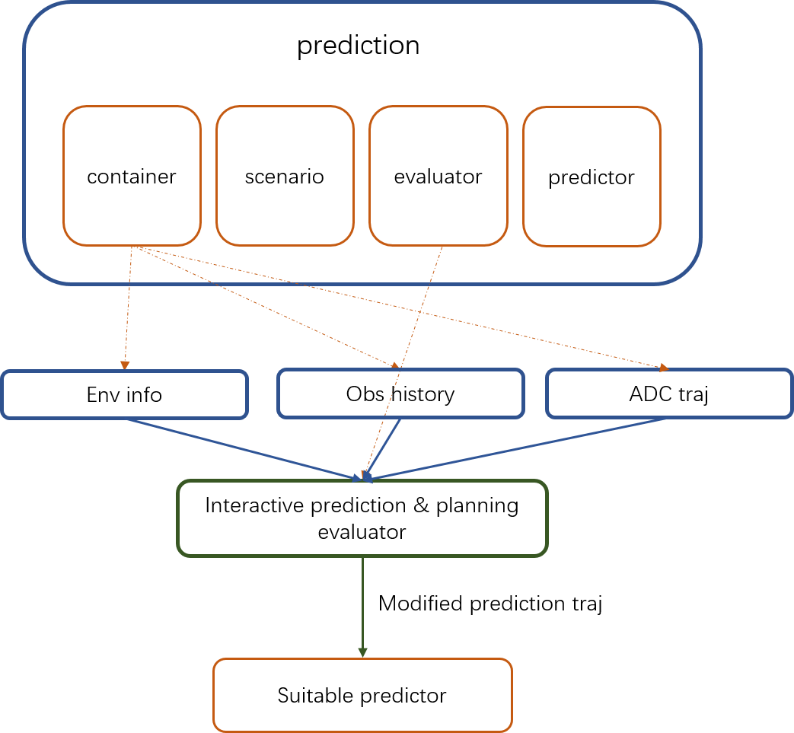

JOINTLY PREDICTION PLANNING EVALUATOR
Introduction
The prediction module comprises 4 main functionalities: Container, Scenario, Evaluator and Predictor.
The Evaluator predicts path and speed separately for any given obstacle. An evaluator evaluates a path by outputting a probability for it (lane sequence) using the given model stored in prediction/data/.
Jointly prediction planning evaluator is used in the new Interactive Obstacle(vehicle-type) model to generate short term trajectory points which are calculated using Vectornet and LSTM. By considering ADC’s trajectory info, the obstacle trajectory prediction can be more accurate under interaction scenario.

Where is the code
Please refer jointly prediction planning evaluator.
Code Reading
Interaction filter
Please refer interaction filter.
The interaction filter is a rule-based filter for selecting interactive obstacles.
Such interactive obstacles will be labeled.
void AssignInteractiveTag();
Model inference
The encoder of jointly prediction planning evaluator is Vectornet, before model inference, we need to process obstacle and map data into the correct format.